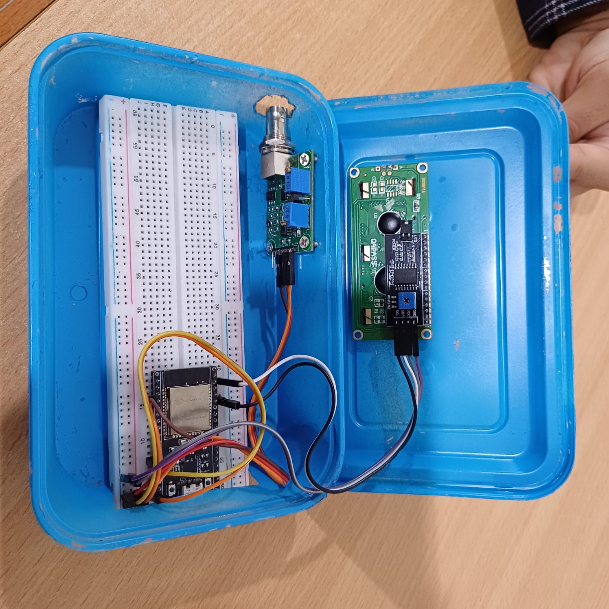

An ESP32 prototype that reads pH, shows the value locally, and sends monitoring data to ThingSpeak.
My roleHardware assembly and ESP32 programming
SystemESP32, E-201 electrode, 4502C module, local display, ThingSpeak
StatusIntegrated and calibrated · Team project

Assembled pH monitoring hardware
01 / CASE STUDYThe system
The system measures pH using an E-201 electrode and 4502C analog module. The ESP32 displays the reading locally and sends data to a ThingSpeak dashboard for remote monitoring.
The prototype needed reliable sensor integration and calibration before readings could be used.
02 / CASE STUDYMy contribution
Assembled and connected the ESP32, pH module, electrode, and local display.
Programmed the ESP32 using Arduino IDE and C++.
Integrated the remote monitoring workflow and supported calibration testing.
03 / CASE STUDYTested result
<5%Reported calibration error
Calibration testing reduced the measurement error to below 5%. Local display and remote ThingSpeak monitoring were both demonstrated on the prototype.
The below-5% figure describes the reported calibration test; it is not a claim of performance in every measurement condition.